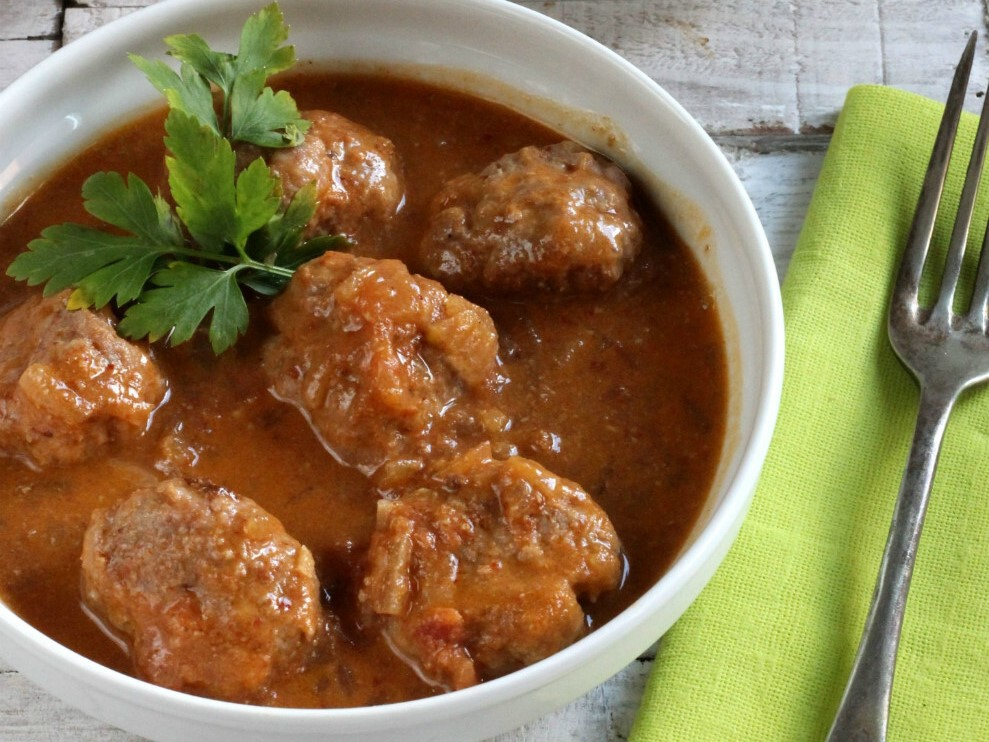

Homemade Beef Meatballs in Vegetable and Sherry Sauce

Homemade beef meatballs in vegetable and sherry sauce are a classic of Spanish cuisine, perfect for a comforting lunch. This recipe combines juicy beef with a rich vegetable sauce and the special touch of sherry wine.
Ingredients
Serves 4
500 g ground beef
1 egg
2 garlic cloves
2 tablespoons breadcrumbs
2 tablespoons milk
Chopped fresh parsley
Salt and pepper to taste
Flour (for coating)
Extra virgin olive oil
1 onion
1 carrot
1 green bell pepper
1 ripe tomato
100 ml sherry wine
300 ml beef stock
Difficulty: Easy
Total time: 50 minutes
Preparation: 20 minutes
Cooking: 30 minutes
How to Make Homemade Beef Meatballs in Vegetable and Sherry Sauce
In a bowl, mix the ground beef with the egg, chopped garlic, breadcrumbs, milk, parsley, salt, and pepper. Shape the meatballs and coat them in flour.
Fry the meatballs in a pan with olive oil until golden on the outside. Set aside.
In the same pan, sauté the chopped onion, carrot, and green pepper until soft. Add the peeled and chopped tomato and cook a few minutes more.
Add the sherry wine and let the alcohol evaporate. Add the beef stock and blend the sauce if desired.
Return the meatballs to the pan with the sauce and cook over low heat for 20-25 minutes, until tender.
Serve hot, accompanied by white rice, potatoes, or bread.